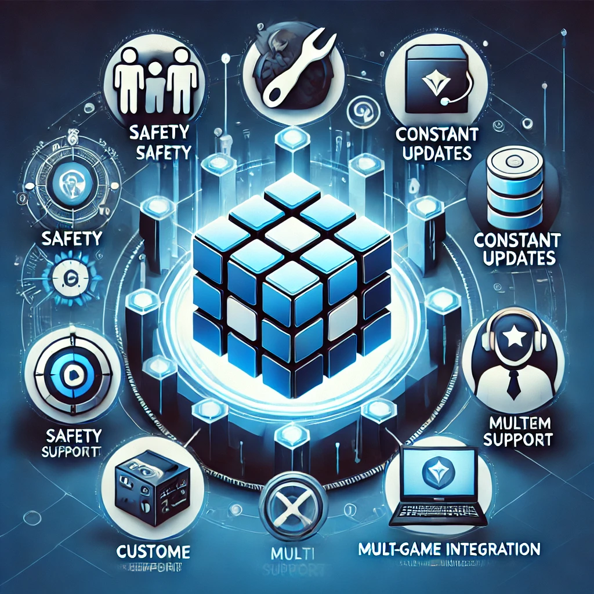

커츠샵 소개
커츠샵은 게임 해킹의 새로운 지평을 여는 플랫폼으로, 서든어택, 배틀그라운드, 오버워치, 발로란트 등 인기 게임에서 사용 가능한 다양한 해킹 도구를 제공합니다. 각 해킹 도구는 사용자가 게임에서 경쟁 우위를 점할 수 있도록 최신 기술을 접목한 기능을 포함하고 있으며, 최신 업데이트와 심도 있는 분석 자료를 통해 정보를 지속적으로 제공합니다.
본 플랫폼은 단순히 치트 소프트웨어를 제공하는 것을 넘어, 해킹 도구 사용에 따른 법적, 윤리적 문제와 계정 정지 위험에 대해서도 명확하게 고지하며, 사용자들이 신중한 판단을 내릴 수 있도록 객관적인 정보를 제공합니다. 커츠샵의 정보는 최신 기사와 전문 리뷰를 기반으로 하여, 신뢰성 높은 데이터를 제공하는 데 중점을 두고 있습니다.

커츠샵 이용 장점
커츠샵은 단순한 해킹 도구 제공을 넘어서 사용자에게 다양한 이점을 제공합니다. 최신 업데이트와 안전성, 다양한 게임 지원, 그리고 전문적인 정보 제공을 통해, 사용자들은 게임에서 경쟁 우위를 점할 수 있습니다.
- 최신 업데이트: 게임 패치에 맞춘 지속적인 소프트웨어 업데이트
- 안전성 보장: 엄격한 검증 절차를 통해 안전한 해킹 도구만 제공
- 다양한 게임 지원: 서든어택, 배틀그라운드, 오버워치, 발로란트 등 주요 게임 전반 지원
- 전문 정보 제공: 심도 있는 기사, 리뷰, 사용자 후기를 통해 객관적이고 신뢰할 수 있는 정보 제공
- 고객 지원: 24시간 고객 지원과 신속한 문제 해결 서비스 제공
이와 같은 강점을 바탕으로, 커츠샵은 사용자들이 보다 전략적인 게임 플레이를 즐길 수 있도록 도와주며, 단순 승리 욕구를 넘어서 게임의 공정성과 재미를 동시에 고려하는 균형 잡힌 접근을 지향합니다.
서든핵 (Sudden Hack)
서든핵은 서든어택 게임에서 사용되는 해킹 도구로, 플레이어의 반응 속도와 정밀한 에임 보조 기능을 극대화하여 전투에서 우위를 점하게 해줍니다. 최신 기술이 적용된 이 도구는 실시간 상황 인식과 다양한 커스터마이징 옵션을 제공하여, 각 사용자에게 최적화된 성능을 발휘합니다.
장점:
- 빠른 실행 및 반응 속도
- 정밀한 에임 보조로 정확한 타격 지원
- 다양한 설정 옵션을 통한 사용자 맞춤 기능 제공
단점 및 문제점:
- 게임 공정성 훼손으로 인한 커뮤니티 내 비난
- 사용 시 계정 정지 및 법적 제재 위험
- 장기간 사용 시 기술적 오류 발생 가능성
다수의 기사와 분석 자료에 따르면, 서든핵은 단기적인 승리 효과는 있으나 장기적으로 게임 생태계에 부정적 영향을 미칠 수 있어 신중한 접근이 요구됩니다.
배그핵 (PUBG Hack)
배그핵은 배틀그라운드 게임에서 사용되는 해킹 도구로, 정밀한 타겟팅과 에임 보조 기능을 통해 전장에서 우위를 점할 수 있도록 설계되었습니다. 직관적인 사용자 인터페이스와 실시간 정보 제공 기능으로, 플레이어는 빠른 판단과 신속한 대응이 가능해집니다.
장점:
- 정확한 타겟팅 및 에임 보조 기능
- 직관적인 인터페이스와 손쉬운 조작
- 실시간 전장 정보 제공을 통한 전략적 판단 지원
단점 및 문제점:
- 게임 밸런스 파괴로 인한 공정성 문제
- 서버 안정성 저해 및 기술적 문제 가능성
- 계정 정지 및 법적 제재 위험
최신 기사에서는 배그핵 사용이 단기적인 게임 플레이의 편의성을 제공할 수 있으나, 전체 게임 커뮤니티에 미치는 부정적 영향과 불균형을 초래할 수 있음이 지적되고 있습니다.

옵치핵 (Overwatch Hack)
옵치핵은 오버워치 게임에서 팀 플레이의 전략적 우위를 극대화하기 위해 개발된 해킹 도구입니다. 실시간 상황 인식 및 팀원 간의 협력을 도모하는 기능들이 포함되어 있으며, 전투 상황에서 빠른 판단과 실행을 지원합니다.
장점:
- 팀 전술 지원 및 실시간 정보 제공
- 유연한 설정과 다양한 옵션 제공
- 전략적 의사 결정에 도움을 주는 데이터 분석 기능
단점 및 문제점:
- 팀 내 불공정성으로 인한 갈등 유발
- 고급 사용자에 의한 기능 남용 가능성
- 계정 정지 및 제재 위험
전문가들은 옵치핵 사용이 단기적으로 팀 전술에 이점을 줄 수 있으나, 장기적으로는 게임의 균형과 협력에 부정적 영향을 미칠 수 있다고 경고하고 있습니다.
발로핵 (Valorant Hack)
발로핵은 발로란트 게임에서 사용되는 해킹 도구로, 정밀한 에임 보조와 빠른 반응 속도를 통해 플레이어에게 전투 상황에서 확실한 우위를 제공합니다. 사용자 친화적인 디자인과 다양한 설정 옵션을 통해 초보자부터 고급 사용자까지 누구나 쉽게 접근할 수 있도록 구성되어 있습니다.
장점:
- 정밀한 에임 보조 기능 제공
- 빠른 실행 및 반응 속도로 게임 흐름 제어
- 사용자 친화적인 인터페이스와 손쉬운 조작
단점 및 문제점:
- 게임 내 공정성 훼손으로 인한 커뮤니티 내 비난
- 계정 정지 및 지속적인 감시 위험
- 기술적 오류 발생 가능성과 예측 불가능한 작동
다수의 분석 자료와 최신 기사는 발로핵 사용이 단기적으로 승리 요인으로 작용할 수 있으나, 장기적으로는 게임의 공정성과 경쟁 구조를 해치는 요인으로 평가하고 있습니다.
결론
커츠샵은 서든핵, 배그핵, 옵치핵, 발로핵과 같은 최신 게임 해킹 도구의 기능, 장단점 및 문제점을 심도 있게 분석하여 사용자들이 합리적인 선택을 할 수 있도록 돕는 전문 플랫폼입니다.
각 해킹 도구는 단기적으로 게임에서 경쟁 우위를 제공할 수 있으나, 동시에 법적 제재, 계정 정지, 그리고 게임 커뮤니티 분열과 같은 부정적 위험을 내포하고 있습니다. 사용자들은 이러한 위험 요소를 충분히 인지한 후, 자신의 게임 플레이 스타일과 윤리적 판단에 따라 신중하게 선택해야 합니다.
커츠샵은 최신 기사와 전문 리뷰를 기반으로 한 심층 분석 자료를 지속적으로 업데이트하여, 단순한 승리 욕구를 넘어 게임의 전반적인 재미와 공정성을 함께 고려하는 전략적 선택을 지원합니다. 앞으로도 안전하고 신뢰할 수 있는 해킹 도구 제공과 함께, 사용자와 커뮤니티의 의견을 반영한 투명한 정보 공개로 게임 해킹의 새로운 패러다임을 제시할 것을 약속드립니다.